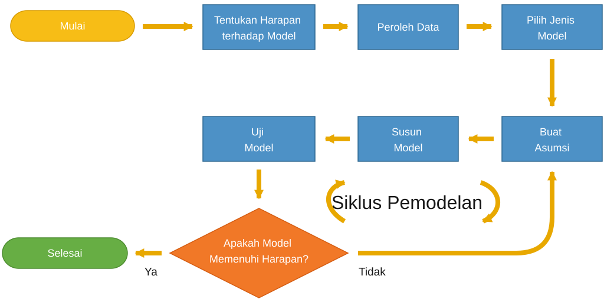

Tujuan Pembelajaran
Pada akhir bab ini, Anda akan mampu melakukan hal-hal berikut.
- Menjelaskan apa yang dimaksud dengan model matematika.
- Menjelaskan apa yang diperlukan untuk menjadi pemodel matematika yang baik.
- Menjelaskan cara membangun model matematika dengan menjalani siklus pemodelan.
- Membahas peran hipotesis dalam proses pembangunan model serta bagaimana hipotesis membatasi kemungkinan penerapan model.
- Merefleksikan penggunaan model matematika yang semestinya.
Apa itu model?
Kata model mengacu pada suatu representasi—sering kali disederhanakan—atas sebuah objek atau hasil pengamatan. Karena itu, sebuah model setidaknya diharapkan dapat meniru, dan lebih baik lagi menjelaskan serta memprediksi, aspek-aspek penting dari suatu fenomena. Model matematika biasanya terdiri atas satu atau lebih persamaan yang menghubungkan variabel terikat (atau keluaran) dengan variabel bebas (atau masukan). Model matematika juga sering melibatkan parameter.
Definisi ini memunculkan pertanyaan tentang reproduksi dibandingkan dengan penjelasan. Sebagai contoh, perhatikan terbentuknya riak pada pasir pantai. Kita dapat membayangkan sebuah model yang memperhitungkan interaksi setiap butir pasir dengan butir-butir di sekitarnya, dengan udara, dan dengan butir-butir yang diam di permukaan tanah. Model semacam ini akan cukup rumit dan melibatkan banyak persamaan dinamis, tetapi dalam keadaan yang sesuai seharusnya dapat mereproduksi terbentuknya riak pasir. Pendekatan lain dapat bekerja pada tingkat yang lebih menyeluruh. Dalam pendekatan ini, model memperhatikan ketinggian pasir di atas permukaan tanah dan menunjukkan bahwa, dalam suatu rentang parameter, besaran tersebut berosilasi sebagai fungsi posisi. Kedua model itu dapat mereproduksi fenomena yang sama, tetapi memberikan jenis penjelasan yang berbeda. Perbedaan ini berasal dari sifat keduanya: model pertama bekerja pada tingkat mikroskopis atau partikulat, sedangkan model kedua bekerja pada tingkat makroskopis. Model ketiga dapat berupa semacam “kotak hitam”: masukannya adalah parameter yang relevan, seperti kecepatan angin serta massa dan ukuran butir pasir, sedangkan keluarannya berupa pola garis dengan sifat yang tepat (periode, tinggi, dan sebagainya). Model seperti ini dapat dibuat dengan melakukan eksperimen secara cermat, menyusun hasilnya dalam tabel, lalu mencari fungsi yang cocok dengan data. Model tersebut tidak menjelaskan mengapa riak pasir terbentuk, tetapi tetap dapat memiliki kemampuan prediktif.
Sejalan dengan itu, telah diketahui bahwa pegunungan, awan, pepohonan, bahkan sejumlah karya seni menyerupai fraktal. Mengetahui kemiripan ini dapat membantu perancang grafis menciptakan bentang alam virtual yang meyakinkan dan indah, tetapi tidak menjelaskan bagaimana gunung atau awan terbentuk.
Dengan demikian, model yang berbeda dapat menghasilkan keluaran yang serupa, dan pemodel harus menentukan model mana yang paling sesuai dengan kebutuhannya. Penentuan ini tentu mengandung pertimbangan subjektif, tetapi hasilnya perlu didasarkan pada jawaban atas pertanyaan-pertanyaan berikut.
- Apa yang kita inginkan dari model tersebut: mereproduksi, menjelaskan, memprediksi, atau melakukan hal lain?
- Apakah model yang prediktif tetapi mahal sepadan dengan upaya yang diperlukan untuk membuatnya?
- Apa saja kriteria minimum yang harus dipenuhi model?
Persoalan terkait adalah bahwa fenomena yang berbeda dapat menghasilkan perilaku yang serupa, seperti penyakit yang berbeda dapat menimbulkan gejala yang sama. Akibatnya, model yang mereproduksi perilaku yang diinginkan belum tentu memiliki nilai penjelas atau prediktif. Demikian pula, kita tidak dapat mendiagnosis penyakit secara masuk akal hanya berdasarkan gejala yang tidak khas bagi penyakit tersebut.
Dalam buku ini, kita tidak akan membahas pendekatan pencocokan kurva (meskipun latihan-latihannya memuat penerapan metode kuadrat terkecil), melainkan memusatkan perhatian pada model yang bersifat deskriptif dan eksplanatoris. Model-model tersebut sering terdiri atas sekumpulan persamaan dinamis. Kita akan mempelajari cara menganalisisnya untuk menilai kemampuannya dalam mereproduksi dan memprediksi fenomena yang relevan. Pembaca diasumsikan telah menguasai dasar-dasar kalkulus, persamaan diferensial, dan aljabar linear. Tinjauan singkat atas topik-topik tersebut tersedia dalam lampiran.
Cara mengembangkan model matematika
Sekarang kita beralih ke langkah-langkah dasar dalam membuat model matematika. Kita akan mengikuti pedoman ini pada semua model yang dibahas di sini: mula-mula secara sangat eksplisit, kemudian secara lebih tersirat.

Tentukan apa yang hendak dimodelkan
Langkah pertama adalah menentukan apa yang harus dicapai oleh model. Dengan kata lain, kita perlu menyusun seperangkat kriteria yang harus dipenuhi oleh model yang memadai. Kriteria ini biasanya lahir dari upaya menyeimbangkan keinginan memperoleh model yang sempurna dengan keterbatasan waktu dan biaya pembuatan model.
Peroleh data
Data sering menjadi sarana terbaik untuk membangun pemahaman intuitif tentang fenomena yang diteliti. Bila relevan, kita juga perlu menguasai prinsip-prinsip dasar fisika, biologi, atau kimia yang menyebabkan perilaku yang diamati. Langkah ini dapat cukup rumit dan sering menuntut pencarian informasi dalam literatur dan/atau pembahasan data bersama para ahli.
Pilih tingkat kerumitan model
Kembali pada contoh terbentuknya riak pasir, kita perlu memutuskan apakah model mikroskopis lebih tepat daripada model makroskopis. Keputusan tersebut dapat didasarkan pada preferensi pribadi pemodel, sifat data yang tersedia, dan tingkat pemahaman terkini mengenai fenomena itu.
Buat asumsi
Kita harus menentukan fakta (atau parameter) mana yang tidak relevan sehingga dapat diabaikan dan mana yang harus diperhitungkan.
Susun model
Kita perlu mendefinisikan variabel bebas dan variabel terikat, menetapkan parameter yang relevan, serta menuliskan formulasi matematis model. Formulasi tersebut harus sesederhana mungkin, dan kita perlu memahami dengan jelas arti setiap suku dalam persamaan-persamaan penyusun model matematika itu.
Uji model
Langkah ini sangat penting untuk menentukan apakah kita puas dengan model yang dibuat. Perilaku model dapat dikaji secara analitis, secara numerik, atau dengan keduanya. Selanjutnya, kita perlu menanyakan apakah intuisi kita secara umum selaras dengan perilaku model, apakah model tersebut tepat secara kualitatif dan kuantitatif, dan apakah kasus-kasus batasnya masuk akal. Jika tidak, kita perlu menemukan penyebabnya dan memperbaiki model—dengan kata lain, kembali ke langkah-langkah sebelumnya. Jadi, pemodelan merupakan proses iteratif, seperti diperlihatkan pada Gambar 1.1. Dalam proses ini, model disempurnakan dengan membandingkan hasil analisis terhadap intuisi kita, data eksperimen yang tersedia, atau pemahaman yang telah diterima mengenai fenomena yang dipelajari.
Mengapa mengembangkan model matematika?
Model matematika adalah sekumpulan persamaan yang mencerminkan pemahaman kita tentang suatu fenomena. Bagi orang yang baru mengenalnya, model mungkin terlihat misterius. Namun, bagi orang yang dapat membaca model, model merupakan sarana komunikasi yang efisien dan ringkas. Pembuatan model membutuhkan banyak upaya, pemikiran, pengujian, dan pemahaman, tetapi pada akhirnya seluruh pekerjaan itu diringkas dalam sekumpulan persamaan atau rumusan suatu proses iteratif. Model semacam itu adalah cara ilmuwan mengungkapkan persepsinya tentang dunia.
Model juga memiliki kegunaan yang lebih praktis. Model dapat digunakan untuk menggambarkan atau menyelidiki keadaan batas yang tidak dapat dicapai dalam praktik. Secara khusus, berbagai komponen model dapat dipisahkan satu sama lain dengan menetapkan semua parameter, kecuali beberapa parameter tertentu, sama dengan nol. Model juga membantu menghemat waktu dan sumber daya. Sebagai contoh, simulasi komputer untuk tabrakan mobil lebih murah daripada eksperimen sebenarnya. Simulator penerbangan digunakan sebagai sarana pelatihan. Model dapat dijalankan sebagai bagian dari studi kelayakan atau untuk menguji hasil berbagai skenario yang mungkin terjadi.
Karena model semakin sering digunakan untuk mengambil keputusan yang berdampak pada masyarakat (lihat, misalnya, artikel berita yang dicantumkan dalam Soal 2 di akhir bab ini), kita perlu memahami keterbatasannya, mengetahui hipotesis yang mendasarinya, dan menyadari peran—yang mungkin sangat menentukan—dari hipotesis tersebut dalam model. Artikel R. May berjudul Uses and Abuses of Mathematics in Biology membahas lebih lanjut persoalan-persoalan tersebut.
Apa yang diperlukan untuk menjadi pemodel yang baik?
Pemodelan matematika memadukan berbagai bidang matematika—misalnya persamaan diferensial, kalkulus, aljabar linear, analisis numerik, teori peluang, sistem dinamis, statistika, dan kuantifikasi ketidakpastian—dengan pengetahuan fisika, biologi, kimia, astrofisika, geologi, hidrologi, dan bidang lainnya, bergantung pada sifat model. Topik-topik ini biasanya diajarkan secara terpisah. Tujuan pembelajaran utama suatu mata kuliah pemodelan matematika adalah membahas cara memanfaatkan beragam bidang pengetahuan untuk membangun dan menganalisis model. Karena itu, pembaca yang telah terlatih dalam matematika dan disiplin ilmu lain mungkin merasa tidak ada “materi baru” dalam buku ini. Hal yang baru adalah penggunaan beragam perangkat matematika untuk mencapai satu tujuan: mengembangkan, memahami, dan menguji model matematika.
Keberhasilan dalam pemodelan matematika memerlukan daya akal, sebab pemodel harus mampu “memikirkan” perangkat atau metode yang tepat untuk digunakan. Pemodel juga memerlukan rasa ingin tahu, imajinasi, dan kesabaran; kemampuan memahami masalah yang tidak sepenuhnya bersifat matematis; kemampuan menyederhanakan masalah untuk menentukan hal yang relevan dan tidak relevan; kemampuan mengubah konsep menjadi persamaan; kemampuan menilai apakah model memadai atau tidak; serta kemampuan membahas masalah bersama orang lain, khususnya mereka yang memiliki bidang keahlian berbeda.
Ringkasan
Frasa pemodelan matematika dapat dipahami dengan berbagai cara. Dalam buku ini, hanya model yang bersifat eksplanatoris dan prediktif serta memiliki formulasi matematis yang disebut model matematika. Secara khusus, teknik pencocokan kurva atau model statistik tidak dibahas.
Proses pemodelan melibatkan serangkaian langkah yang perlu ditempuh pemodel secara sistematis. Langkah-langkah tersebut mencakup mengetahui apa yang hendak dimodelkan, memperoleh data, menentukan jenis model yang akan dikembangkan, membuat asumsi, menyusun model, menguji dan memperbaikinya, lalu menggunakan model tersebut. Asumsi penyederhanaan yang dibuat selama pengembangan model harus dipahami dengan jelas, terutama jika hasil model digunakan untuk kebijakan atau pengambilan keputusan.
Pemodelan matematika merupakan kegiatan lintas disiplin yang menuntut penghargaan terhadap kekuatan analisis matematika, minat pada disiplin terapan, landasan matematika dan komputasi yang kuat, serta keterampilan komunikasi yang baik.
Deskripsi Gambar
Gambar 1.1: Bagan alir “Siklus Pemodelan” yang menunjukkan proses iteratif dengan delapan langkah. Proses dimulai dari “Mulai” dan “Tentukan Harapan terhadap Model”, lalu bergerak melalui pengumpulan data, pemilihan model, asumsi model, penyusunan model, dan pengujian model, kemudian berakhir pada belah ketupat keputusan “Apakah Model Memenuhi Harapan?”. Jika jawabannya “Tidak”, alur kembali ke “Buat Asumsi”. Jika jawabannya “Ya”, proses berakhir di “Selesai”. [Kembali ke Gambar 1.1]
Bahan Renungan
Soal 1
Bacalah artikel R. May berjudul Uses and Abuses of Mathematics in Biology. Bagaimana artikel tersebut menggambarkan bahaya mempercayai model secara membabi buta? Apakah menurut Anda argumennya meyakinkan?
Soal 2
Bacalah sekurang-kurangnya tiga artikel berita berikut.
- Rapid Response Could Have Curbed Foot-and-Mouth Epidemic oleh Martin Enserink
- Disease control: Virtual plagues get real oleh V. Gewin
- African swine fever outbreak alarms wildlife biologists and veterinarians oleh Erik Stokstad
- U.K. expands kill zone for badgers in fight against bovine TB, sparking controversy oleh Erik Stokstad
- Italy’s olive crisis intensifies as deadly tree disease spreads oleh Alison Abbott
- Why computer simulations should replace animal testing for heart drugs, oleh Elisa Passini, Blanca Rodriguez, dan Patricia Benito
- Could computer models be the key to better COVID vaccines? oleh Elie Dolgin
- OFF THE GRID: Computer models that forecast overloaded power lines are holding back U.S. solar and wind energy projects, oleh Dan Charles
Kemudian jawablah pertanyaan-pertanyaan berikut. Dalam argumentasi Anda, sertakan pembahasan tentang artikel yang dibaca dengan rujukan yang tepat.
- Apakah menurut Anda model matematika patut digunakan untuk mengambil keputusan yang berdampak pada manusia dan masyarakat? Mengapa?
- Menurut Anda, kriteria apa yang harus dipenuhi model semacam itu jika hendak digunakan untuk merumuskan kebijakan?
Soal 3
Andaikan Anda memegang jabatan penting dalam dunia usaha atau pemerintahan dan harus mengambil keputusan yang akan memengaruhi masa depan banyak orang. Keputusan tersebut bergantung pada simulasi suatu model matematika. Pertanyaan apa saja yang akan Anda ajukan kepada pengembang model untuk membantu pengambilan keputusan?
Soal 4
Bacalah artikel N. Goldenfeld dan L. Kadanoff berjudul Simple Lessons from Complexity. Ringkaslah gagasan utama artikel tersebut dan tunjukkan simpulan mana dari para penulis yang menurut Anda terutama perlu diingat ketika mengembangkan model.
Soal 5
Perhatikan himpunan titik data pada bidang dan garis lurus dengan persamaan Definisikan jarak antara himpunan data dan himpunan sebagai
Tunjukkan bahwa terdapat pasangan yang meminimumkan nilai Pilihan parameter ini memberikan pencocokan linear bagi himpunan data Teknik pencocokan tersebut disebut metode kuadrat terkecil.
Soal 6
Dengan metode kuadrat terkecil (lihat Soal 5), carilah garis lurus yang paling cocok dengan titik-titik data berikut: (1,3.3), (2.5, 8), (4,13), (7,22), (8,25.5). Gambarkan garis dan titik-titik data pada grafik yang sama. Apakah hasil pencocokannya memadai? Jelaskan alasan Anda.
Soal 7
Bukalah notebook Python pendamping untuk pencocokan kurva dan pelajari antarmuka terbuka NumPy/SciPy yang digunakan di dalamnya. Buat sekumpulan titik data di sekitar grafik fungsi-fungsi berikut, lalu periksa apakah hasil pencocokan yang diberikan oleh notebook memadai. Apa simpulan Anda?